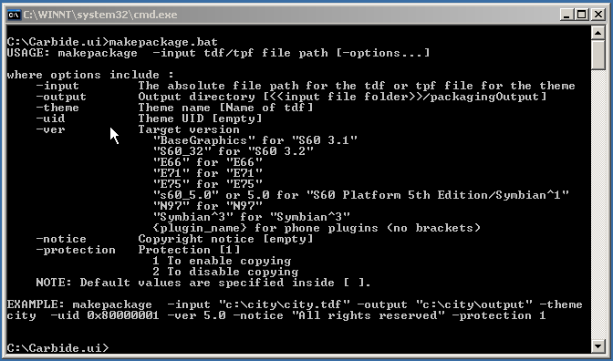

Command Line Packaging
Follow the below steps to create package (sis file) through command line.
- Install the plug-in
for which the command line packaging needs to be run.
- Open Command prompt and change to the directory where carbide.ui is extracted .
- Run "makepackage.bat" file by providing the required parameters .

Figure:
Command Line Packaging